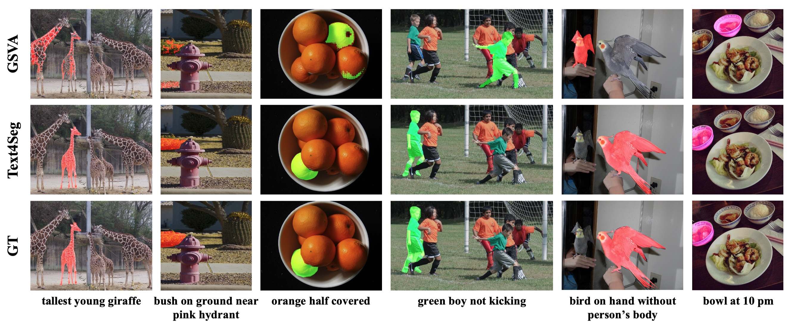
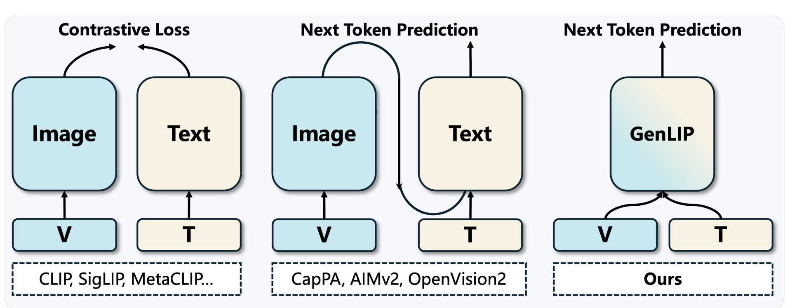

Yunqing Zhao
I was a Research Scientist at TikTok / ByteDance, Singapore. I work on multimodal AI, with a focus on scalable post-training for vision-language models.
PhD (Outstanding Thesis Award) from SUTD, 2024. Previously at Sea AI Lab, Microsoft Research Asia, and ByteDance AI Lab.
Selected Publications
† corresponding · * equal contribution · Full list on Google Scholar

CodeDance: A Dynamic Tool-integrated MLLM for Executable Visual Reasoning
IEEE/CVF Conference on Computer Vision and Pattern Recognition (CVPR), 2026
Do we always need to integrate tools for visual reasoning? While tool-augmented MLLMs have shown strong gains, indiscriminate tool invocation results in unnecessary computation and reasoning inefficiency. CodeDance learns when and how to use tools — and critically, when tool invocation is unnecessary. Through a difficulty-aware RL objective (RBAT), it achieves strong improvements across counting, chart QA, and visual search/math benchmarks while reducing reasoning turns.

Text4Seg++: Advancing Image Segmentation via Generative Language Modeling
IEEE Transactions on Pattern Analysis and Machine Intelligence (TPAMI), 2026
Can a multimodal LLM segment at the pixel level without bolting on a separate mask decoder? Text4Seg++ recasts segmentation as pure text generation via semantic descriptors that map each image patch to a text label, with a Row-wise Run-Length Encoding (R-RLE) that trims sequence length by 74% and speeds inference 3x. Reframing the task as next-brick prediction, it outperforms state-of-the-art models across natural and remote-sensing benchmarks with no task-specific fine-tuning, while staying compatible with existing MLLM backbones.

Let ViT Speak: Generative Language-Image Pre-training
European Conference on Computer Vision (ECCV), 2026
What if a vision encoder were pretrained the way LLMs are — by simply predicting the next token? GenLIP makes the ViT itself generative: it reads image patches and emits language tokens directly under a plain language-modeling objective, dropping the contrastive two-tower setup and any separate text decoder. The result is a strikingly simple recipe that aligns visual features with the autoregressive nature of LLMs and transfers cleanly into multimodal models.

TimeExpert: An Expert-Guided Video LLM for Video Temporal Grounding
IEEE/CVF International Conference on Computer Vision (ICCV), 2025
Video temporal grounding bundles three distinct subtasks — localizing timestamps, scoring saliency, and generating text — yet most Video-LLMs push them all through identical pathways. TimeExpert is a Mixture-of-Experts Video-LLM that routes each task-specific token to a specialized expert, sharpening event modeling and efficiency to reach state-of-the-art on dense video captioning, moment retrieval, and highlight detection.

A Recipe for Watermarking (Multimodal) Diffusion Models
arXiv Preprint, 2023 · US Patent, 2024
We derive a recipe for efficiently watermarking state-of-the-art diffusion models (e.g., Stable Diffusion), via training from scratch or fine-tuning. Our recipe is straightforward but involves empirically ablated implementation details, providing a solid foundation for future research on watermarking DMs.

Evaluating Adversarial Robustness of Large Vision-Language Models
Conference on Neural Information Processing Systems (NeurIPS), 2023
Large VLMs achieve unprecedented performance with visual inputs, but multimodal generation exacerbates safety concerns. We evaluate the adversarial robustness of open-source VLMs (e.g., MiniGPT-4, LLaVA, BLIP, UniDiffuser) in the most realistic high-risk setting, where adversaries have only black-box access and seek to elicit targeted responses.
Exploring Incompatible Knowledge Transfer in Few-Shot Image Generation
IEEE/CVF Conference on Computer Vision and Pattern Recognition (CVPR), 2023
Through interpretable GAN dissection, we show that fine-tuning-based methods cannot effectively remove knowledge incompatible with the target domain after adaptation. We propose RICK, an efficient algorithm that estimates filter importance and prunes those incompatible with the target domain for few-shot image generation.

FS-BAN: Born-Again Networks for Domain Generalization Few-shot Classification
IEEE Transactions on Image Processing (TIP), 2023
We propose a method to improve generalizability for cross-domain few-shot classification using born-again networks. Our algorithm requires no additional parameters or training data and can be readily applied to existing FSC models, distilling dark knowledge from a teacher via multi-task objectives designed for cross-domain few-shot learning.

Few-Shot Image Generation via Adaptation-Aware Kernel Modulation
Conference on Neural Information Processing Systems (NeurIPS), 2022
When fine-tuning a pretrained generator on few-shot target samples, we show that state-of-the-art algorithms perform no better than a simple baseline when the target is distant from the source domain. We propose AdAM, a parameter-efficient and target-aware method to select source knowledge important for few-shot adaptation.

Revisiting Label Smoothing & Knowledge Distillation Compatibility: What was Missing?
International Conference on Machine Learning (ICML), 2022
Prior work disagreed on whether a label-smoothed teacher helps or hurts knowledge distillation. We pinpoint systematic diffusion as the missing piece — it erodes the benefits of distilling from an LS-trained teacher at high temperatures — and show that pairing an LS-trained teacher with low-temperature transfer reliably produces strong students.

A Closer Look at Few-shot Image Generation
IEEE/CVF Conference on Computer Vision and Pattern Recognition (CVPR), 2022
We analyze existing few-shot image generation algorithms in a unified testbed and find that diversity degradation is the major issue during few-shot target adaptation. Our mutual information based algorithm alleviates this issue and achieves state-of-the-art performance on few-shot image generation tasks.
Experience
TikTok / ByteDance, Singapore
With Song Bai and Zilong Huang.
Microsoft Research Asia
Sea AI Lab (SAIL), Singapore
TikTok / ByteDance AI Lab, Singapore
With Henghui Ding and Houjing Huang.
ST Engineering - SUTD Cyber Security Lab
Advised by Prof. Ngai-Man Cheung.
University of Hong Kong
Advised by Dr. Vincent Tam.
Teaching & Service
Reviewer — NeurIPS, CVPR, TPAMI, TIP, TIFS, TNNLS, TASL, TMM, TCSVT, CVIU.
Teaching Assistant — 50.021 Artificial Intelligence and 50.035 Computer Vision at SUTD.